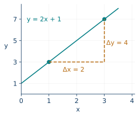
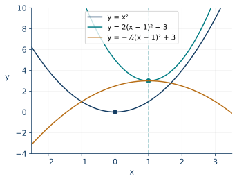
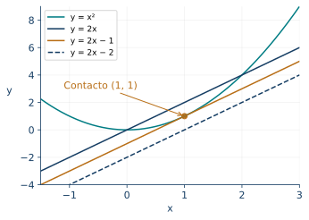
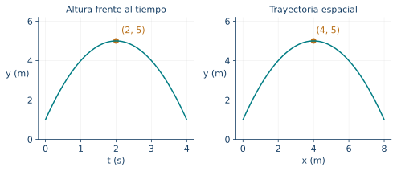

Funciones afines y cuadráticas
← Funciones, dominios y representaciones · Índice del libro · Siguiente →
Dos talleres ofrecen fabricar el mismo objeto. Uno cobra un cargo inicial y una cantidad por cada unidad; el otro tiene un cargo inicial mayor y un precio unitario menor. Para decidir conviene reunir cada presupuesto en una función y averiguar cómo cambia la diferencia entre ambos. Si, además, queremos escoger las dimensiones de una caja o el precio de una entrada, aparecen productos de cantidades variables. Las rectas y las parábolas permiten seguir esas decisiones con una precisión que una lista de valores apenas comienza a sugerir.
Estudiaremos las expresiones como herramientas para reconocer una estructura. La pendiente contará cuánto cambia una cantidad por unidad de otra. Un cuadrado completo mostrará a qué distancia estamos de un valor extremo. Los factores localizarán los ceros y ayudarán a leer signos. Elegir una forma de escribir la función será parte de la solución del problema.
Una tasa de cambio que se conserva
Una función afín tiene una regla \(f(x)=mx+b\), con parámetros reales fijos y un dominio declarado. Al comparar dos entradas \(u\) y \(v\) obtenemos
\[f(v)-f(u)=m(v-u).\]
Esta igualdad explica la función de \(m\): mide el cambio de imagen por cada unidad de cambio de entrada. Para \(u\ne v\), el cociente entre ambos cambios es siempre \(m\). La gráfica es una recta, o la parte de ella seleccionada por el dominio. El valor \(b\) es la imagen de cero cuando esa entrada pertenece al dominio; en la recta completa, señala el corte con el eje vertical.
La pendiente conserva también las unidades. En un costo medido en pesos frente a una longitud medida en metros, \(m\) se expresa en pesos por metro. Una pendiente negativa describe una disminución de la imagen al aumentar la entrada. Una pendiente cero produce una función constante. La regla \(f(x)=mx\) recibe el nombre de función lineal en la convención de esta obra y expresa proporcionalidad directa en los contextos apropiados. En el dibujo, pasar de la entrada uno a la entrada tres aumenta la imagen de tres a siete. El cambio horizontal es dos y el vertical cuatro: su cociente vuelve a ser dos. El triángulo reúne visualmente los dos cambios que aparecen en la fórmula.

Problema 1. Recuperar una tarifa desde dos presupuestos
Un taller cobra 3800 pesos por fabricar dos piezas y 7400 por fabricar cinco. Se supone un cargo fijo y un precio constante por pieza. Encuentra la función de costo e interpreta sus parámetros.
Solución. Las tres piezas adicionales aumentan el costo en \(7400-3800=3600\) pesos. Cada pieza añade, por tanto, \(m=3600/3=1200\) pesos. Escribimos \(C(n)=1200n+b\) y usamos el primer presupuesto: \(3800=2400+b\), de donde \(b=1400\). La regla es \(C(n)=1400+1200n\), con \(n\) entero positivo para los pedidos descritos. Se verifica \(C(5)=1400+6000=7400\). El número 1400 representa el cargo fijo del modelo; atribuirlo a un pedido de cero piezas exige que el contrato admita también ese caso. Así se conserva la interpretación del parámetro sin ampliar silenciosamente el servicio.
Problema 2. Un depósito que se vacía a ritmo constante
Un depósito contiene 900 litros al empezar y pierde 30 litros por minuto hasta vaciarse. Describe volumen, dominio temporal y gráfica. ¿Cuándo quedan 240 litros?
Solución. En \(t\) minutos salen \(30t\) litros, así que \(V(t)=900-30t\). El vaciado termina cuando \(900-30t=0\), es decir, a los treinta minutos. El modelo actúa en \(0\le t\le30\) y su recorrido es \([0,900]\). La gráfica es el segmento que une \((0,900)\) con \((30,0)\), con tiempo en el eje horizontal y litros en el vertical. Para localizar 240 litros resolvemos \(900-30t=240\): resulta \(30t=660\) y \(t=22\), dentro del dominio. La pendiente \(-30\) tiene unidades de litros por minuto. La ecuación describe el tramo de vaciado; una etapa posterior necesita su propia regla.
Problema 3. Traducir una escala de temperatura
Se adopta la relación afín entre dos escalas cuyas lecturas correspondientes son \((C,F)=(0,32)\) y \((100,212)\). Encuentra \(F\) en función de \(C\) y recupera \(C\) cuando \(F=95\).
Solución. La pendiente es \((212-32)/(100-0)=180/100=9/5\). El primer par fija el término constante en 32. Por tanto, \(F=(9/5)C+32\). Para recuperar la lectura inicial restamos 32 y dividimos por \(9/5\): \(C=(5/9)(F-32)\). Cuando \(F=95\), obtenemos \(C=(5/9)63=35\). Al sustituir, \((9/5)35+32=63+32=95\). El cociente \(9/5\) expresa unidades de la segunda escala por unidad de la primera; el desplazamiento de 32 explica que multiplicar por ese cociente, por sí solo, produzca otra conversión.
Problema 4. Comprobar la hipótesis afín
En una tabla aparecen los pares \((1,4)\), \((3,10)\) y \((6,19)\). Determina si pertenecen a una misma función afín. Examina después el dato adicional \((4,14)\).
Solución. Entre los dos primeros pares, la pendiente es \((10-4)/(3-1)=3\); entre el segundo y el tercero es \((19-10)/(6-3)=3\). La regla determinada por los primeros dos es \(f(x)=3x+1\), y efectivamente \(f(6)=19\). Los tres datos son compatibles con esa función. En cuatro, la regla predice trece, mientras el nuevo dato registra catorce: el residuo observado menos predicho es uno. Los cuatro pares admiten otras descripciones, pero una sola función afín que contenga los dos primeros ya está determinada. La discrepancia pide revisar la hipótesis o el registro. Las entradas están separadas por distancias distintas; los cocientes de cambio permiten compararlas correctamente.
Propiedades de las funciones afines
| Propiedad | Fórmula y condiciones de uso |
|---|---|
| Regla y cambio | \(f(x)=mx+b\) implica \(f(v)-f(u)=m(v-u)\) para entradas del dominio. |
| Pendiente entre puntos | \(m=(y_2-y_1)/(x_2-x_1)\), con \(x_1\ne x_2\); \(b=y_1-mx_1\). |
| Variación | \(m>0\): crecimiento estricto; \(m<0\): decrecimiento estricto; \(m=0\): constancia. |
| Corte vertical | \((0,b)\) pertenece a la gráfica si \(0\) pertenece al dominio. |
| Cero | Para \(m\ne0\), el único candidato es \(-b/m\); se comprueba su pertenencia al dominio. |
| Recuperación afín | Para \(m\ne0\), \(y=mx+b\) equivale a \(x=(y-b)/m\), dentro de los conjuntos declarados. |
Pruebas. En el apéndice, «Tasa constante y reconstrucción afín».
Comparar dos reglas y cuidar el intervalo
Comparar presupuestos significa estudiar la función diferencia. Para dos reglas afines, esa diferencia vuelve a ser afín; su cero marca un posible empate y su signo señala cuál imagen es mayor. El dominio común reúne las entradas admisibles para ambas ofertas. Si contamos objetos, una igualdad obtenida con una cantidad fraccionaria puede separar dos decisiones enteras aunque ningún pedido empate exactamente.
Problema 5. El pedido que cambia la elección
Dos talleres ofrecen \(A(n)=2000+700n\) y \(B(n)=5000+400n\), en pesos, para pedidos enteros de una a treinta piezas. Determina cuándo conviene cada uno.
Solución. Restamos los costos: \(A(n)-B(n)=300n-3000=300(n-10)\). Para \(n<10\) la diferencia es negativa y \(A\) cuesta menos. En diez ambos cobran 9000 pesos. Para \(n>10\), \(B\) cuesta menos. Al incorporar el dominio, elegimos \(A\) para pedidos de una a nueve piezas, cualquiera en diez y \(B\) de once a treinta. El resultado incluye tanto el punto de intersección \((10,9000)\) como la comparación a ambos lados. Comprobar un pedido pequeño, por ejemplo \(n=1\), confirma el sentido del signo: 2700 frente a 5400.
Problema 6. Un cruce fuera del servicio disponible
Dos planes tienen costos \(A(x)=1000+200x\) y \(B(x)=4000+100x\), para \(0\le x\le20\). ¿Hay una entrada del servicio en que cuesten lo mismo? ¿Cuál conviene?
Solución. Igualar las expresiones produce \(100x=3000\), de donde \(x=30\). Ese valor queda fuera del intervalo disponible. Para todas las entradas permitidas, \(A(x)-B(x)=100x-3000\le2000-3000=-1000<0\). Por tanto, \(A\) es más barato en todo el servicio. Las rectas completas sí se cruzan en \((30,7000)\); las gráficas de los planes son segmentos que terminan en veinte. La distinción geométrica explica por qué resolver la ecuación es solo una parte de la comparación contextual.
Problema 7. Un umbral entre cantidades enteras
Para pedidos enteros positivos se ofrecen \(A(n)=500+120n\) y \(B(n)=1000+80n\). Decide desde qué cantidad conviene \(B\) y examina si existe empate.
Solución. La diferencia es \(A-B=40n-500\). Su cero real es \(n=500/40=12,5\). Para cantidades enteras, \(n\le12\) produce diferencia negativa y conviene \(A\); \(n\ge13\) produce diferencia positiva y conviene \(B\). En doce, los costos son 1940 y 1960; en trece, 2060 y 2040. El cambio de preferencia ocurre entre esos pedidos. El dominio entero conserva ambas comprobaciones y muestra que ningún pedido alcanza el empate de las rectas completas.
Problema 8. Una familia de rectas con un punto fijo
Estudia las gráficas de \(f_k(x)=kx+2\), para \(k\) real. Determina qué parámetros hacen que la recta pase por \((3,8)\) y clasifica su intersección con \(g(x)=2x-1\).
Solución. Todas las rectas pasan por \((0,2)\); el parámetro \(k\) cambia la pendiente alrededor de ese punto. La condición \(f_k(3)=8\) da \(3k+2=8\), así que \(k=2\). Para comparar la familia con \(g\), la ecuación general es \((k-2)x=-3\). Si \(k\ne2\), hay una intersección con abscisa \(x=-3/(k-2)\) y ordenada \(2x-1\). Si \(k=2\), la diferencia \(f_k-g=3\) es constante y positiva: son rectas paralelas distintas. En particular, la recta que pasa por \((3,8)\) pertenece a este último caso. Para \(k=0\), la familia contiene la horizontal \(y=2\), incluida en el análisis general.
Propiedades de las comparaciones afines
| Propiedad | Fórmula y condiciones de uso |
|---|---|
| Función diferencia | \((m_1x+b_1)-(m_2x+b_2)=(m_1-m_2)x+b_1-b_2\). |
| Intersección única | Si \(m_1\ne m_2\), \(x=(b_2-b_1)/(m_1-m_2)\); se valida en el dominio común. |
| Pendientes iguales | Si \(m_1=m_2\), las reglas coinciden cuando \(b_1=b_2\) y tienen diferencia constante distinta de cero cuando \(b_1\ne b_2\). |
| Comparación | El signo de \(f-g\) decide el orden de los valores para cada entrada común. |
| Umbral discreto | Una solución real de la comparación se intersecta con las entradas enteras admitidas. |
Pruebas. En el apéndice, «Diferencias afines e intersecciones».
El cuadrado que organiza una parábola
Una función cuadrática tiene la regla \(q(x)=ax^2+bx+c\), con \(a\ne0\). Para comprender su gráfica conviene completar el cuadrado. Extraemos \(a\) de los términos que contienen \(x\) y añadimos dentro el cuadrado de la mitad del coeficiente lineal, compensando su valor:
\[q(x)=a\left(x+\frac{b}{2a}\right)^2+c-\frac{b^2}{4a}=a(x-h)^2+k,\]
donde \(h=-b/(2a)\) y \(k=c-b^2/(4a)\). La forma canónica sitúa el vértice en \((h,k)\). Las entradas \(h-d\) y \(h+d\) producen la misma imagen porque sus diferencias con \(h\) son opuestas y tienen igual cuadrado. La recta \(x=h\) es, por ello, el eje de simetría de la parábola completa.
Si \(a>0\), el término \(a(x-h)^2\) es no negativo y la menor imagen es \(k\). Si \(a<0\), ese término es no positivo y la mayor imagen es \(k\). En la gráfica diremos, respectivamente, que la parábola abre hacia arriba o hacia abajo. A igual distancia horizontal \(d\) del eje, la separación vertical respecto del vértice es \(ad^2\). Esta relación da un significado preciso al efecto de \(a\): su valor absoluto controla esa separación, mientras su signo fija la orientación.
Problema 9. Leer una expresión desde su vértice
Estudia \(q(x)=2(x-3)^2-8\) en los reales. Encuentra vértice, eje, recorrido, ceros y corte vertical.
Solución. El cuadrado se anula en \(x=3\) y es positivo en las demás entradas. Como su coeficiente es dos, la menor imagen es \(-8\), alcanzada en tres. El vértice es \((3,-8)\), el eje \(x=3\) y el recorrido \([-8,\infty)\). Para un valor \(y\ge-8\), tomar \(x=3+\sqrt{(y+8)/2}\) comprueba que se alcanza. Los ceros satisfacen \((x-3)^2=4\), de donde \(x=1\) o \(x=5\). En cero, \(q(0)=18-8=10\), así que el corte vertical es \((0,10)\). Las dos raíces quedan a igual distancia del eje, como exige la simetría.
Problema 10. Cambiar de forma para revelar un máximo
Encuentra la información principal de \(q(x)=-x^2+6x-5\) y describe su variación.
Solución. Agrupamos \(q(x)=-(x^2-6x+9)+9-5=-(x-3)^2+4\). La mayor imagen es cuatro y se alcanza en tres. El vértice es \((3,4)\) y el recorrido \((-\infty,4]\). Para \(u<v\le3\), las distancias al eje disminuyen, sus cuadrados disminuyen y el signo negativo hace aumentar la imagen. Para \(3\le u<v\), sucede lo inverso. La función crece estrictamente en \((-\infty,3]\) y decrece estrictamente en \([3,\infty)\). Los ceros resultan de \((x-3)^2=4\): son uno y cinco. El corte vertical es \((0,-5)\). Expandir la forma canónica recupera los tres coeficientes originales y verifica la transformación.
Problema 11. Separar los efectos de tres parámetros
Compara \(p(x)=x^2\), \(r(x)=2(x-1)^2+3\) y \(s(x)=-\tfrac12(x-1)^2+3\). Calcula sus valores a una unidad de sus respectivos ejes de simetría.
Solución. En \(p\) el vértice es \((0,0)\); a una unidad del eje, las imágenes son uno. En \(r\) el vértice se sitúa en \((1,3)\); en \(x=0\) y \(x=2\) el cuadrado vale uno y la imagen vale cinco, dos unidades por encima del vértice. En \(s\) se conserva el vértice \((1,3)\), la abertura es hacia abajo y esas mismas entradas dan \(3-1/2=5/2\). Los parámetros actúan en lugares distintos de la expresión: \(h\) localiza el eje, \(k\) la altura del vértice y \(a\) multiplica el cuadrado de la distancia horizontal. En particular, el término \((x-1)\) hace que el cuadrado se anule en uno, lo que fija el sentido del desplazamiento horizontal.

Problema 12. Conservar el coeficiente lineal mientras cambia la abertura
Para \(q_a(x)=ax^2+4x+1\), con \(a\ne0\), encuentra el vértice en función de \(a\). Examina también la regla que se obtiene en \(a=0\).
Solución. La abscisa del vértice es \(h=-4/(2a)=-2/a\) y su ordenada es \(k=1-16/(4a)=1-4/a\). Para \(a=1\), el vértice es \((-2,-3)\); para \(a=2\), \((-1,-1)\); para \(a=-1\), \((2,5)\). Cambiar \(a\) manteniendo \(b=4\) desplaza también el vértice: la lectura de parámetros depende de la forma de escritura. La forma canónica es \(a(x+2/a)^2+1-4/a\) y su expansión da la expresión inicial. En \(a=0\) la regla original produce \(4x+1\), una función afín. Las fórmulas que dividen por \(a\) se aplican precisamente a los miembros cuadráticos de la familia.
Propiedades de las formas de una cuadrática
| Propiedad | Fórmula y condiciones de uso |
|---|---|
| Forma general | \(q(x)=ax^2+bx+c\), con \(a\ne0\). |
| Forma canónica | \(q(x)=a(x-h)^2+k\), con \(h=-b/(2a)\) y \(k=c-b^2/(4a)\). |
| Simetría | \(q(h-d)=q(h+d)\); eje de la parábola completa: \(x=h\). |
| Separación vertical | \(q(h+d)-k=ad^2\); el signo de \(a\) fija la abertura. |
| Extremo y recorrido | En dominio \(\mathbb R\): mínimo \(k\) si \(a>0\), máximo \(k\) si \(a<0\); recorridos \([k,\infty)\) y \((-\infty,k]\), respectivamente. |
| Variación estricta | Para \(a>0\), decrece hasta \(h\) y crece desde \(h\); para \(a<0\), crece hasta \(h\) y decrece desde \(h\). |
Pruebas. En el apéndice, «Cuadrados completos y parámetros de parábolas».
Ceros, signos y encuentros con una recta
La ecuación \(q(x)=0\) pregunta por los puntos de altura cero. Completar el cuadrado conduce a una condición sobre un cuadrado real. El discriminante \(\Delta=b^2-4ac\) resume esa condición: hay dos raíces reales distintas si \(\Delta>0\), una raíz real doble si \(\Delta=0\) y las imágenes conservan un mismo signo si \(\Delta<0\). Las fórmulas y la factorización estudiadas antes adquieren aquí una lectura gráfica.
Si las raíces reales son \(r_1,r_2\), podemos escribir \(q(x)=a(x-r_1)(x-r_2)\). Los factores hacen visibles los cambios de signo. Para encontrar el encuentro con una recta \(\ell\), estudiamos \(q-\ell\): sus ceros son las abscisas comunes y su signo compara las alturas. Una raíz doble de esa diferencia corresponde a un contacto con una recta tangente a la parábola.
Problema 13. Leer el signo desde los factores
Estudia ceros y signo de \(q(x)=-2(x+1)(x-3)\). Encuentra también su vértice y corte vertical.
Solución. Los ceros son \(-1\) y tres. Para \(x<-1\), ambos factores son negativos y el coeficiente \(-2\) hace negativa la imagen. Entre \(-1\) y tres, los factores tienen signos opuestos y la imagen es positiva. Para \(x>3\), ambos factores son positivos y la imagen vuelve a ser negativa. En las raíces vale cero. El eje queda en el punto medio de las raíces, \(h=(-1+3)/2=1\); allí \(q(1)=-2\cdot2\cdot(-2)=8\). La forma canónica es \(-2(x-1)^2+8\), que verifica el máximo. En cero, el valor es seis. Las formas factorizada y canónica responden a preguntas complementarias sobre la misma función.
Problema 14. Contar raíces sin calcularlas una por una
Clasifica los ceros de \(q_k(x)=x^2-4x+k\) según el parámetro \(k\) e interpreta el caso de contacto con el eje horizontal.
Solución. Escribimos \(q_k(x)=(x-2)^2+k-4\). Para anular la imagen necesitamos \((x-2)^2=4-k\). Si \(k<4\), aparecen las dos raíces \(2\pm\sqrt{4-k}\). Si \(k=4\), ambas se reúnen en \(x=2\) y la expresión es \((x-2)^2\). Si \(k>4\), el mínimo \(k-4\) es positivo y todas las imágenes son positivas. La familia conserva el eje \(x=2\) y desplaza verticalmente el vértice \((2,k-4)\). En \(k=4\), el eje horizontal toca la parábola en el mínimo; la raíz doble expresa algebraicamente ese contacto.
Problema 15. Dos alturas iguales a la de una recta
Encuentra las intersecciones de \(q(x)=x^2-2x\) y \(\ell(x)=x+4\), y determina dónde la parábola está por debajo de la recta.
Solución. La diferencia es \(q(x)-\ell(x)=x^2-3x-4=(x-4)(x+1)\). Sus ceros son \(-1\) y cuatro. Sustituimos en la recta para obtener las ordenadas: tres y ocho. Las intersecciones son \((-1,3)\) y \((4,8)\). Entre las raíces los factores tienen signos opuestos, así que \(q-\ell<0\): la parábola está por debajo para \(-1<x<4\). Fuera de ese intervalo está por encima, y en los extremos coinciden las alturas. Sustituir los dos pares en ambas expresiones comprueba el encuentro; resolver solo sus abscisas habría dejado incompleta la localización gráfica.
Problema 16. La altura de una tangente
Para las rectas \(\ell_k(x)=2x+k\), determina cuántas intersecciones hay con \(q(x)=x^2\). Encuentra el miembro tangente de la familia.
Solución. La igualdad de alturas equivale a \(x^2-2x-k=0\), o \((x-1)^2=k+1\). Si \(k>-1\), hay dos intersecciones; si \(k=-1\), hay una sola abscisa, \(x=1\); si \(k<-1\), el cuadrado requerido es negativo y la igualdad carece de solución real. La recta tangente es \(y=2x-1\) y su punto de contacto es \((1,1)\). Además, \(x^2-(2x-1)=(x-1)^2\ge0\): la recta queda debajo de toda la parábola y la toca precisamente en uno. Esta identidad justifica el contacto sin recurrir a cálculo diferencial.

Propiedades de ceros e intersecciones cuadráticas
| Propiedad | Fórmula y condiciones de uso |
|---|---|
| Discriminante | \(\Delta=b^2-4ac\); raíces reales \((-b\pm\sqrt\Delta)/(2a)\) si \(\Delta\ge0\). |
| Número de raíces reales | Dos distintas si \(\Delta>0\); una doble si \(\Delta=0\); ninguna si \(\Delta<0\). |
| Factorización real | Con raíces reales \(r_1,r_2\), \(q(x)=a(x-r_1)(x-r_2)\), incluida la raíz doble. |
| Signo con dos raíces | Para \(r_1<r_2\), el signo es el de \(a\) fuera de \([r_1,r_2]\) y el opuesto dentro; vale cero en los extremos. |
| Comparación con una recta | Los ceros y el signo de \(q-\ell\) describen encuentros y orden de alturas en el dominio común. |
| Contacto con una recta | Si \(q(x)-\ell(x)=a(x-r)^2\), hay contacto en \((r,q(r))\) y una raíz doble de la diferencia. |
Pruebas. En el apéndice, «Raíces, signos y contacto de una parábola».
Optimizar dentro de las condiciones del problema
Una forma canónica permite comparar todos los valores con el del vértice. Para usarla en una decisión hay que localizar ese vértice respecto del dominio. En un intervalo cerrado, la menor distancia al eje se alcanza en el vértice si pertenece al intervalo, o en el extremo más cercano si queda fuera; la mayor distancia se alcanza en algún extremo. El signo de \(a\) traduce esa comparación de distancias al orden de las imágenes.
Cuando la entrada es entera, conviene comparar los enteros admisibles más cercanos al eje. En un intervalo abierto, una cota puede quedar sin alcanzar. Cada una de estas situaciones conserva la misma identidad cuadrática y cambia la pregunta sobre qué entradas están disponibles.
Problema 17. Cercar un terreno junto a un muro
Se dispone de cuarenta metros de cerca para tres lados de un rectángulo; el cuarto lado queda junto a un muro. Encuentra las dimensiones que maximizan el área.
Solución. Sea \(x\) la longitud de cada lado perpendicular al muro y \(y\) el lado paralelo que sí se cerca. La condición es \(2x+y=40\), de modo que \(y=40-2x\). Las longitudes positivas exigen \(0<x<20\). El área es \(A(x)=x(40-2x)=40x-2x^2=200-2(x-10)^2\). Como restamos un cuadrado no negativo, \(A(x)\le200\), con igualdad en \(x=10\), que pertenece al dominio. Entonces \(y=20\). El área máxima es 200 metros cuadrados. La comprobación \(2\cdot10+20=40\) devuelve la solución al recurso inicial. Aunque el dominio sea abierto, el vértice interior permite alcanzar el máximo.
Problema 18. Una restricción impide alcanzar el vértice global
Un modelo de ingreso es \(R(x)=-2x^2+24x\), y las condiciones de operación permiten \(1\le x\le4\). Encuentra sus extremos en ese intervalo.
Solución. Completamos \(R(x)=72-2(x-6)^2\). El vértice completo tiene abscisa seis, fuera del intervalo. Entre uno y cuatro, la distancia a seis disminuye al crecer \(x\), por lo que \(R\) crece estrictamente. El mínimo se alcanza en uno y vale \(-2+24=22\); el máximo se alcanza en cuatro y vale \(-32+96=64\). Por tanto, el recorrido restringido es \([22,64]\). La cota 72 pertenece al estudio de la parábola completa y queda por encima de todos los ingresos disponibles en esta operación. La restricción cambia el óptimo efectivo.
Problema 19. Elegir un precio en una escala discreta
Un modelo de ingreso adopta \(R(p)=p(90-2p)\), donde el precio \(p\) solo puede tomar valores enteros entre cero y cuarenta y cinco. Encuentra los precios de mayor ingreso.
Solución. La expresión es \(R(p)=90p-2p^2=1012,5-2(p-22,5)^2\). En la recta real la mayor imagen estaría en \(p=22,5\). Los enteros admisibles más cercanos son veintidós y veintitrés, ambos a distancia \(0,5\). Producen \(R(22)=22\cdot46=1012\) y \(R(23)=23\cdot44=1012\). Cualquier otro entero queda más lejos del eje y da un cuadrado mayor, así que su ingreso es menor. Los dos precios son óptimos para el modelo discreto. La regla supone una demanda de \(90-2p\) unidades; la elección comercial depende de que esa hipótesis describa el mercado considerado.
Problema 20. Un extremo que se alcanza y otro que se aproxima
Estudia los extremos de \(q(x)=(x-2)^2+1\) en el dominio \((0,3]\).
Solución. El vértice pertenece al dominio, así que el mínimo es uno y se alcanza en dos. Para \(0<x\le3\), tenemos \(-2<x-2\le1\), por lo que \(q(x)<5\). Las imágenes pueden aproximarse a cinco tomando entradas positivas cada vez más pequeñas. Para comprobar que cualquier imagen admite otra mayor, si \(0<x<2\) elegimos \(x/2\): queda más lejos de dos y aumenta el cuadrado. Si \(2\le x\le3\), su imagen es a lo sumo dos, mientras \(q(1/2)=13/4>2\). Así, ninguna entrada alcanza un máximo. El recorrido es \([1,5)\): para \(1\le y<5\), \(x=2-\sqrt{y-1}\) pertenece a \((0,2]\) y produce \(y\).
Propiedades de la optimización cuadrática
| Propiedad | Fórmula y condiciones de uso |
|---|---|
| Comparación con el vértice | \(q(x)-k=a(x-h)^2\); la distancia $x-h$ organiza el orden de las imágenes. |
| Intervalo cerrado | En \([L,U]\), se comparan \(q(L)\), \(q(U)\) y \(q(h)\) cuando \(h\in[L,U]\). |
| Entradas enteras | Para buscar el extremo del vértice se comparan los enteros admisibles de menor distancia a \(h\); se consideran los límites del dominio. |
| Extremos abiertos | Un extremo requiere una entrada que alcance su valor; los límites excluidos pueden dar cotas sin máximo o mínimo. |
Pruebas. En el apéndice, «Distancia al eje y optimización restringida».
Reconstruir una regla y reconocer el alcance de los datos
La información que recibimos puede favorecer una forma particular. Un vértice sugiere \(a(x-h)^2+k\); dos ceros sugieren \(a(x-r_1)(x-r_2)\). Un punto adicional determina entonces el factor que falta, siempre que aporte una condición efectiva. Tres pares con entradas distintas determinan una única regla polinómica de grado a lo sumo dos. Según los datos, el coeficiente cuadrático puede resultar cero y la regla obtenida será afín.
Si los datos vienen de entradas separadas por el mismo paso, podemos estudiar qué cambia de una fila a la siguiente. Para una regla cuadrática \(q(x)=ax^2+bx+c\), fijemos un paso \(d\ne0\) y restemos dos valores consecutivos:
\[q(x+d)-q(x)=2adx+ad^2+bd.\]
La expresión obtenida es afín en \(x\). Por eso, al avanzar otra vez el mismo paso \(d\), su valor cambia en la cantidad constante \(2ad^2\). Las segundas diferencias registran ese cambio entre primeras diferencias y permiten reconstruir o comprobar un candidato cuadrático en una muestra equiespaciada. La constancia observada describe las filas disponibles; para extender la regla a otras entradas mantendremos explícita la hipótesis de que buscamos un modelo de grado a lo sumo dos.
Problema 21. Un vértice y un punto
Una parábola tiene vértice \((2,-3)\) y pasa por \((0,5)\). Encuentra su regla y verifica ambas condiciones.
Solución. La forma canónica es \(q(x)=a(x-2)^2-3\). El punto adicional exige \(5=4a-3\), por lo que \(a=2\). Así, \(q(x)=2(x-2)^2-3=2x^2-8x+5\). Al sustituir cero aparece cinco; al sustituir dos aparece \(-3\). Además, \(q(x)+3=2(x-2)^2\ge0\), con igualdad solo en dos, lo que comprueba que el par indicado es efectivamente el vértice. El punto adicional está fuera del eje y proporciona un cuadrado positivo para determinar \(a\). Si se hubiera repetido solo el vértice, cualquier valor positivo o negativo distinto de cero de \(a\) habría conservado su posición, con orientación según su signo.
Problema 22. Dos raíces y una altura
Una función cuadrática tiene ceros \(-2\) y cuatro, y su gráfica pasa por \((0,-16)\). Encuentra su expresión, vértice y recorrido.
Solución. Los ceros sugieren \(q(x)=a(x+2)(x-4)\). En cero, \(-16=-8a\), así que \(a=2\). Obtenemos \(q(x)=2(x+2)(x-4)=2x^2-4x-16\). El eje está en \(x=(-2+4)/2=1\) y la altura allí es \(2\cdot3\cdot(-3)=-18\). Por tanto, \(q(x)=2(x-1)^2-18\) y su recorrido en los reales es \([-18,\infty)\). Sustituir las dos raíces anula sus factores; sustituir cero da \(-16\). Las tres comprobaciones corresponden a las condiciones del enunciado y la forma canónica confirma el mínimo.
Problema 23. Una tabla regular y una comprobación adicional
Para entradas \(0,1,2,3\) se registran imágenes \(1,4,9,16\). Reconstruye una regla de grado a lo sumo dos y examina el nuevo par \((4,26)\).
Solución. Las primeras diferencias son tres, cinco y siete; sus diferencias son dos y dos. Con paso uno, \(2a=2\) da \(a=1\). En \(q(x)=x^2+bx+c\), el dato de cero da \(c=1\) y el de uno da \(1+b+1=4\), así que \(b=2\). La regla \(q(x)=(x+1)^2\) produce nueve y dieciséis en las dos entradas restantes. Predice \(q(4)=25\), mientras el nuevo par da veintiséis: el residuo es uno. Los cinco pares carecen de una única regla de grado a lo sumo dos que los reproduzca todos, pues los tres primeros ya la determinan. Una fórmula de grado mayor o un modelo con errores de observación son posibilidades distintas que exigen sus propias hipótesis.
| Entrada | Imagen observada |
|---|---|
| 0 | 1 |
| 1 | 4 |
| 2 | 9 |
| 3 | 16 |
Propiedades de la reconstrucción y las diferencias
| Propiedad | Fórmula y condiciones de uso |
|---|---|
| Vértice y punto adicional | \(a=(y_0-k)/(x_0-h)^2\) si \(x_0\ne h\); se exige \(a\ne0\) para una cuadrática. |
| Raíces y punto adicional | \(a=y_0/((x_0-r_1)(x_0-r_2))\) si el denominador es distinto de cero; se exige \(a\ne0\). |
| Tres entradas distintas | Tres pares con abscisas distintas determinan un único polinomio de grado a lo sumo dos. |
| Primera diferencia | Con paso fijo \(d\), \(q(x+d)-q(x)=2adx+ad^2+bd\). |
| Segunda diferencia | Con paso fijo \(d\ne0\), \(q(x+2d)-2q(x+d)+q(x)=2ad^2\). |
| Alcance de una muestra | Reproducir una tabla finita comprueba compatibilidad del modelo en esas entradas; su extensión requiere hipótesis. |
Pruebas. En el apéndice, «Reconstrucción cuadrática y diferencias regulares».
El tiempo en un eje y el lugar en otro
Una gráfica temporal reúne pares formados por un instante y una cantidad observada. Una trayectoria espacial reúne posiciones de un punto que se mueve. Para relacionarlas hacen falta funciones que indiquen cada coordenada en el mismo instante. Escribir qué significa cada eje permite conservar esa relación durante un cálculo.
Problema 24. Dos gráficas temporales y una trayectoria
Un movimiento se modela por \(x(t)=2t\) e \(y(t)=1+4t-t^2\), para \(0\le t\le4\), con coordenadas en metros y tiempo en segundos. Describe la altura máxima, la posición correspondiente y la trayectoria espacial.
Solución. La altura se escribe \(y(t)=5-(t-2)^2\). Su máximo es cinco metros en \(t=2\) segundos. En ese instante, la coordenada horizontal es \(x(2)=4\) metros: el punto espacial es \((4,5)\). En la gráfica altura-tiempo el par correspondiente es \((2,5)\), donde el dos mide segundos. Para obtener la trayectoria despejamos \(t=x/2\) de la primera regla y sustituimos en la segunda: \(y=1+2x-x^2/4\), con \(0\le x\le8\). La curva une \((0,1)\) y \((8,1)\) y tiene vértice \((4,5)\). Cada coordenada de sus puntos mide metros. Ambas parábolas describen el mismo modelo desde variables horizontales diferentes. La hipótesis temporal uniforme \(x=2t\) permite esta eliminación directa del tiempo.

Propiedades de gráficas temporales y trayectorias
| Propiedad | Fórmula y condiciones de uso |
|---|---|
| Gráfica temporal | Los pares \((t,y(t))\) relacionan tiempo y altura, con sus unidades respectivas. |
| Trayectoria paramétrica | Los pares \((x(t),y(t))\) reúnen coordenadas del mismo instante. |
| Eliminación temporal afín | Si \(x(t)=ut+x_0\) con \(u\ne0\), se sustituye \(t=(x-x_0)/u\) y se transporta el dominio temporal. |
Pruebas. En el apéndice, «Coordenadas temporales y eliminación de un parámetro».
Ejercicios para trabajar sin profesor
1. Un costo afín da 5000 pesos por tres objetos y 8600 por seis. Encuentra la regla e interpreta el cargo fijo.
2. Un depósito contiene 600 litros y pierde veinte por minuto. Determina dominio de vaciado y tiempo en que quedan 140 litros.
3. Dos escalas afines tienen pares \((0,10)\) y \((50,110)\). Encuentra la conversión y recupera la primera lectura cuando la segunda es setenta.
4. Examina si \((0,2)\), \((2,8)\) y \((5,17)\) admiten una regla afín. Contrasta el dato \((3,12)\).
5. Compara \(A(n)=1000+500n\) y \(B(n)=3400+300n\) para pedidos enteros entre uno y veinte.
6. Compara \(A(x)=500+100x\) y \(B(x)=2000+50x\) en \([0,10]\). Localiza el cruce de las rectas completas.
7. Para enteros positivos, decide cuándo conviene cada costo \(A(n)=200+90n\), \(B(n)=700+50n\).
8. Estudia \(f_k(x)=kx-1\): punto común, parámetro para pasar por \((2,5)\) e intersección con \(g(x)=3x+2\).
9. Encuentra vértice, recorrido, ceros y corte vertical de \(q(x)=3(x+1)^2-12\).
10. Estudia vértice, ceros y variación de \(q(x)=-2x^2+8x-6\).
11. Compara los vértices y las imágenes a una unidad del eje de \(x^2\), \(3(x+2)^2-1\) y \(-(x+2)^2-1\).
12. Encuentra el vértice de \(q_a(x)=ax^2-6x+2\), con \(a\ne0\). Evalúa los casos \(a=1,3,-1\) y examina \(a=0\).
13. Estudia ceros, signo, vértice y corte vertical de \(q(x)=-(x+2)(x-4)\).
14. Clasifica los ceros de \(q_k(x)=x^2+2x+k\) según \(k\).
15. Encuentra las intersecciones de \(q(x)=x^2\) y \(\ell(x)=2x+3\) y compara sus alturas.
16. Clasifica las intersecciones de \(q(x)=x^2\) con \(\ell_k(x)=-4x+k\). Encuentra la recta tangente y su punto de contacto.
17. Se cercan tres lados de un rectángulo junto a un muro con 32 metros de cerca. Encuentra el área máxima.
18. Determina extremos y recorrido de \(R(x)=-x^2+10x\) en \([1,3]\).
19. Maximiza \(R(p)=p(70-2p)\) para precios enteros entre cero y treinta y cinco.
20. Estudia extremos y recorrido de \(q(x)=(x-1)^2+2\) en \((-1,2]\).
21. Reconstruye una parábola de vértice \((-1,2)\) que pase por \((1,10)\).
22. Reconstruye una cuadrática con ceros uno y cinco y corte vertical \((0,10)\). Encuentra su vértice.
23. Reconstruye una regla de grado a lo sumo dos desde las imágenes \(2,5,12,23\) en \(0,1,2,3\). Contrasta el par \((4,39)\).
24. Para \(x(t)=3t\), \(y(t)=2+6t-t^2\) en \(0\le t\le6\), encuentra altura máxima, posición correspondiente y trayectoria espacial.
Soluciones desarrolladas
Ejercicio 1. Separar el cargo y el incremento
Las tres unidades adicionales cuestan \(8600-5000=3600\), por lo que la pendiente es 1200 pesos por objeto. En \(C(n)=1200n+b\), el dato de tres objetos da \(b=5000-3600=1400\). Así, \(C(n)=1400+1200n\) para pedidos enteros positivos dentro del servicio. Sustituir seis da \(1400+7200=8600\). El valor 1400 describe el cargo fijo del modelo; el cobro efectivo de un pedido vacío depende de las condiciones del taller.
Ejercicio 2. El segmento de vaciado
La regla es \(V(t)=600-20t\). Su cero está en \(t=30\), así que el dominio temporal de vaciado es \([0,30]\). El recorrido es \([0,600]\) litros. Para \(V(t)=140\), resolvemos \(20t=460\) y obtenemos \(t=23\) minutos, que pertenece al dominio. En la gráfica, el segmento une \((0,600)\) con \((30,0)\); su pendiente representa una variación de \(-20\) litros por minuto.
Ejercicio 3. Recuperar una lectura
La pendiente entre los pares es \((110-10)/50=2\), y el primer par fija el término constante en diez. La segunda lectura es \(y=2x+10\). Para \(y=70\), la entrada es \(x=(70-10)/2=30\). Comprobar \(2\cdot30+10=70\) verifica la recuperación. El desplazamiento de diez forma parte de la conversión y explica que la relación entre las lecturas incluya una suma.
Ejercicio 4. Un dato que obliga a revisar el modelo
Los cocientes de cambio son \((8-2)/(2-0)=3\) y \((17-8)/(5-2)=3\). La regla es \(f(x)=3x+2\); sus imágenes en cero, dos y cinco son las registradas. En tres predice once, frente al doce observado. El residuo es uno. Los dos primeros pares ya determinan la única regla afín candidata, por lo que los cuatro datos completos exigen revisar el registro o ampliar la familia de modelos.
Ejercicio 5. Comparar por la diferencia
La diferencia \(A-B=200n-2400=200(n-12)\) se anula en doce. Para pedidos de uno a once conviene \(A\); en doce ambos cuestan 7000; de trece a veinte conviene \(B\). Las dos sustituciones en doce dan \(1000+6000=3400+3600=7000\). El dominio entero y sus límites forman parte de la decisión final.
Ejercicio 6. Dos segmentos separados
Igualar costos da \(50x=1500\), de donde \(x=30\). Allí las rectas completas tienen valor 3500. En el dominio permitido, \(A-B=50x-1500\le500-1500=-1000<0\). Por tanto, \(A\) cuesta menos para toda entrada de \([0,10]\). El cruce de las prolongaciones queda fuera de los segmentos que describen el servicio.
Ejercicio 7. Dos pedidos vecinos del umbral
Se obtiene \(A-B=40n-500\), con cero real en \(12,5\). Para enteros \(1\le n\le12\) conviene \(A\); para \(n\ge13\) conviene \(B\). En doce, los costos son 1280 y 1300; en trece, 1370 y 1350. Las comprobaciones muestran el cambio de preferencia entre enteros consecutivos y la ausencia de empate para un pedido admisible.
Ejercicio 8. Pendientes que coinciden
Todos los miembros pasan por \((0,-1)\). La condición \(f_k(2)=5\) da \(2k-1=5\), de donde \(k=3\). Para intersectar con \(g\), resolvemos \((k-3)x=3\). Si \(k\ne3\), la abscisa es \(3/(k-3)\) y la ordenada es \(3x+2\). Si \(k=3\), las rectas son paralelas y su diferencia constante es \(-3\). Ese es justamente el parámetro exigido por el punto \((2,5)\).
Ejercicio 9. El cuadrado y sus distancias
El vértice es \((-1,-12)\) y la abertura es hacia arriba. El recorrido es \([-12,\infty)\): cada \(y\ge-12\) se alcanza con \(x=-1+\sqrt{(y+12)/3}\). Los ceros satisfacen \((x+1)^2=4\) y son \(-3\) y uno. En cero, la imagen es \(3-12=-9\), así que el corte vertical es \((0,-9)\). Las raíces quedan a distancia dos del eje \(x=-1\).
Ejercicio 10. Un máximo por completar el cuadrado
Escribimos \(q(x)=-2(x^2-4x+4)+8-6=-2(x-2)^2+2\). El vértice es \((2,2)\), el máximo es dos y el recorrido es \((-\infty,2]\). Los ceros cumplen \((x-2)^2=1\): son uno y tres. La función crece estrictamente hasta dos y decrece estrictamente desde dos, porque la distancia al eje primero disminuye y después aumenta. El signo del coeficiente convierte el menor cuadrado en la mayor imagen.
Ejercicio 11. Comparar separaciones desde el vértice
La primera parábola tiene vértice \((0,0)\) y vale uno en \(x=\pm1\). La segunda tiene vértice \((-2,-1)\) y, a una unidad del eje, en \(x=-3,-1\), vale \(3-1=2\). La tercera comparte ese vértice y en esas entradas vale \(-1-1=-2\). Las separaciones verticales son, respectivamente, uno, tres y menos uno. Así se distinguen la posición del vértice, la orientación y el factor que multiplica el cuadrado.
Ejercicio 12. El vértice depende de dos cocientes
Para \(a\ne0\), \(h=-(-6)/(2a)=3/a\) y \(k=2-36/(4a)=2-9/a\). En \(a=1\) resulta \((3,-7)\); en \(a=3\), \((1,-1)\); en \(a=-1\), \((-3,11)\). La forma canónica \(a(x-3/a)^2+2-9/a\) se expande a la regla inicial. En \(a=0\) queda la función afín \(-6x+2\), cuyo estudio se realiza con la regla original y sus parámetros afines.
Ejercicio 13. Signos y simetría desde las raíces
Las raíces son \(-2\) y cuatro. Fuera de ellas, el producto de factores es positivo y la imagen negativa; entre ellas, el producto es negativo y la imagen positiva. En las raíces vale cero. El eje es \(x=1\) y la imagen allí vale \(-(3)(-3)=9\), de modo que el vértice es \((1,9)\). En cero se obtiene ocho. La identidad \(q(x)=-(x-1)^2+9\) comprueba el máximo y el recorrido \((-\infty,9]\).
Ejercicio 14. Desplazar la altura del vértice
Completamos \(q_k(x)=(x+1)^2+k-1\). Los ceros exigen \((x+1)^2=1-k\). Para \(k<1\), son \(-1\pm\sqrt{1-k}\); para \(k=1\), hay una raíz doble en \(-1\); para \(k>1\), el mínimo \(k-1\) es positivo. La familia conserva el eje \(x=-1\) y mueve verticalmente el vértice \((-1,k-1)\). El caso \(k=1\) corresponde al contacto con el eje horizontal.
Ejercicio 15. Comparar alturas de una recta y una parábola
La diferencia es \(x^2-2x-3=(x-3)(x+1)\). Las abscisas comunes son \(-1\) y tres; al sustituir en \(2x+3\) obtenemos uno y nueve. Los puntos son \((-1,1)\) y \((3,9)\). En \((-1,3)\) el producto es negativo y la parábola queda debajo de la recta; fuera del intervalo queda encima. En los extremos coinciden ambas alturas.
Ejercicio 16. Encontrar el contacto
La igualdad es \(x^2+4x-k=0\), equivalente a \((x+2)^2=k+4\). Hay dos intersecciones para \(k>-4\), una para \(k=-4\) y ninguna para \(k<-4\). La tangente es \(y=-4x-4\) y toca en \((-2,4)\). La identidad \(x^2-(-4x-4)=(x+2)^2\ge0\) comprueba que la recta permanece debajo de la parábola y que ambas alturas coinciden solo en \(x=-2\).
Ejercicio 17. El recurso fija el dominio
Si \(x\) es cada lado perpendicular al muro, el lado restante mide \(32-2x\) y las longitudes positivas exigen \(0<x<16\). El área es \(A(x)=32x-2x^2=128-2(x-8)^2\). Su máximo es 128 metros cuadrados y se alcanza en \(x=8\), con el otro lado igual a dieciséis. Las dimensiones son admisibles y consumen \(2\cdot8+16=32\) metros de cerca.
Ejercicio 18. El mejor valor disponible
Se obtiene \(R(x)=25-(x-5)^2\). En \([1,3]\) la distancia a cinco disminuye al crecer la entrada, por lo que \(R\) crece estrictamente. El mínimo es \(R(1)=9\) y el máximo \(R(3)=21\). El recorrido es \([9,21]\). El vértice completo, en cinco, queda fuera de las condiciones y su altura veinticinco expresa una cota superior a la alcanzable en ese intervalo.
Ejercicio 19. Comparar los dos enteros más cercanos
La forma canónica es \(R(p)=612,5-2(p-17,5)^2\). Los enteros admisibles de menor distancia al eje son diecisiete y dieciocho. Sus ingresos son \(17\cdot36=612\) y \(18\cdot34=612\). Todo otro entero está más lejos de \(17,5\) y produce una imagen menor. Ambos precios maximizan el ingreso de este modelo discreto.
Ejercicio 20. Una cota en el extremo excluido
El vértice es \((1,2)\) y pertenece al dominio, así que el mínimo es dos. En \((-1,2]\) se tiene \(|x-1|<2\) y \(q(x)<6\). Para \(-1<x<1\), la entrada \((x-1)/2\) está entre \(-1\) y \(x\) y queda más lejos de uno, por lo que produce una imagen mayor. Para \(1\le x\le2\), las imágenes son a lo sumo tres; en \(x=-1/2\) la imagen es \(17/4>3\). Por ello falta máximo. Para cualquier \(2\le y<6\), la entrada \(x=1-\sqrt{y-2}\) pertenece al dominio y da \(y\). El recorrido es \([2,6)\).
Ejercicio 21. Determinar el factor restante
Partimos de \(q(x)=a(x+1)^2+2\). El punto \((1,10)\) exige \(10=4a+2\), así que \(a=2\). La regla es \(2(x+1)^2+2=2x^2+4x+4\). En \(x=1\) vale diez y en \(x=-1\) vale dos. Como \(q(x)-2=2(x+1)^2\ge0\), esa última imagen es el mínimo y confirma el vértice declarado.
Ejercicio 22. Los ceros sugieren los factores
Escribimos \(q(x)=a(x-1)(x-5)\). El corte vertical da \(10=5a\), de donde \(a=2\). Así, \(q(x)=2x^2-12x+10=2(x-3)^2-8\). El vértice es \((3,-8)\) y el recorrido completo \([-8,\infty)\). Los factores verifican los ceros uno y cinco; sustituir cero recupera diez. La forma canónica demuestra la posición del mínimo.
Ejercicio 23. Comprobar una regla reconstruida
Las primeras diferencias de la tabla son tres, siete y once; las segundas son cuatro y cuatro. Con paso uno, \(2a=4\) da \(a=2\). El valor inicial fija \(c=2\) y el de uno exige \(2+b+2=5\), por lo que \(b=1\). La regla \(q(x)=2x^2+x+2\) produce doce y veintitrés en dos y tres. En cuatro predice \(32+4+2=38\); el dato treinta y nueve deja residuo uno. Los tres primeros pares ya fijan el candidato dentro de la familia de grado a lo sumo dos.
Ejercicio 24. Conservar el significado de los ejes
La altura es \(y(t)=11-(t-3)^2\), con máximo once metros en tres segundos. En ese instante \(x(3)=9\), por lo que la posición espacial es \((9,11)\), mientras la gráfica temporal altura-tiempo contiene \((3,11)\). Al despejar \(t=x/3\) obtenemos \(y=2+2x-x^2/9\), con \(0\le x\le18\). La trayectoria une \((0,2)\) con \((18,2)\) y tiene vértice \((9,11)\). El transporte del dominio conserva los instantes permitidos y todas las posiciones alcanzadas.
Diagnóstico de salida
Ante una regla afín, interpreta pendiente y cargo inicial con sus unidades. Ante una cuadrática, escoge una forma que revele la información pedida y justifica el cambio de expresión. Compara las entradas candidatas con el dominio y distingue un valor alcanzado de una cota. Al reconstruir desde datos, declara la familia adoptada y comprueba las condiciones originales. En un movimiento, escribe qué cantidad y qué unidad representa cada eje antes de comparar las gráficas.
← Funciones, dominios y representaciones · Índice del libro · Siguiente →